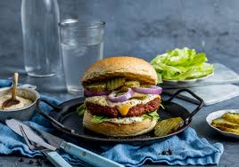

Cheeseburger

Trying to make the perfect cheeseburger?
Look no further, follow the recipe below
for a perfect result!
Ingredients
- A pan
- Bun/meat/salad
- Seasoning of your choice
- Thats it!
Recipe
- Start out with fresh salad, tomato and onion
- Wash the vegetables, and cut into an appropiate size
- Put the pan to medium high heat and toast the buns
- Make sure to let the meat rest in room temp for 30 minutes
- Season the patty with salt/pepper and add it to a sizzling pan
- Cook the burger 2 minutes each side, add cheese when you flip it
- Add everything together, and add your premade baconjam